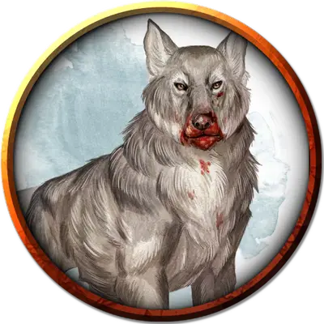

Волк-хранитель
Guardian Wolf
Огромный Монстр, без мировоззрения

Класс Доспеха 14 (природный доспех)
Хиты 66 (7к12 + 21)
Скорость 60 футов
| мод | спас | ||
|---|---|---|---|
| СИЛ | 22 | +6 | +6 |
| ЛОВ | 14 | +2 | +2 |
| ТЕЛ | 16 | +3 | +3 |
| мод | спас | ||
|---|---|---|---|
| ИНТ | 5 | −3 | −3 |
| МДР | 12 | +1 | +1 |
| ХАР | 8 | −1 | −1 |
Навыки Восприятие +5, Скрытность +4
Чувства пассивное Восприятие 15
Языки Общий, Эльфийский
Опасность 4 (1100 опыта)
Бонус мастерства +2
Особенности
Острый слух и тонкий нюх. Волк совершает с преимуществом проверки Мудрости (Восприятие), полагающиеся на слух и обоняние.
Тактика стаи. Волк совершает с преимуществом броски атаки по существу, если в пределах 5 футов от этого существа находится как минимум один дееспособный союзник волка.
Действия
Мультиатака. Волк совершает две атаки: одну укусом и одну когтями.
Укус. Рукопашная атака оружием: +8 к попаданию, досягаемость 5 футов, одна цель. Попадание: 11 (1к10 + 6) колющего урона. Если цель — существо, она должна преуспеть в спасброске Силы Сл 16, иначе будет сбита с ног.
Когти. Рукопашная атака оружием: +8 к попаданию, досягаемость 5 футов, одно существо. Попадание: 15 (2к8 + 6) колющего урона.